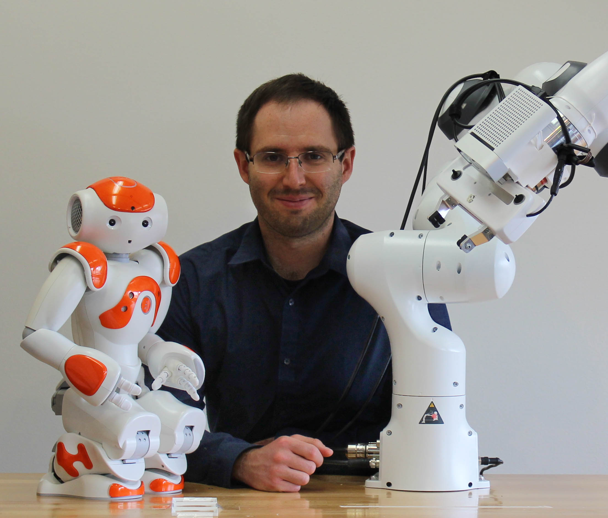

Emmanuel Senft
I am a Research Scientist and Group Leader at Idiap Research Institute and member of the Swiss Young Academy.

I lead the Human-centered Robotics and AI group since September 2022. My group develops assistive robotic technologies and new paradigms to empower end-users of AI technologies by exploring the intersection of participatory design, end-user programming, and interactive machine learning.
I obtainmy my MSc. in Microengineering from EPFL, my PhD in human-robot interaction at the University of Plymouth, UK. Before joining Idiap, I was a cooperate researcher at ATR in Japan and a Research Associate at the University of Wisconsin-Madison in the USA in the People and Robots Lab.